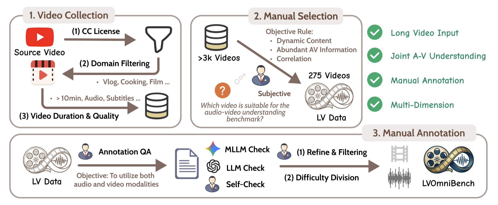
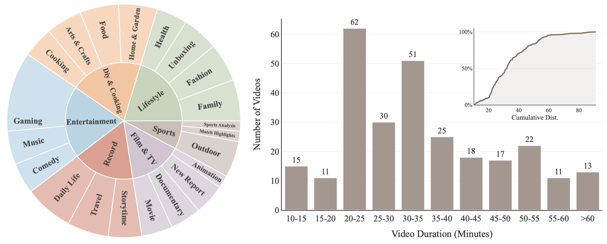
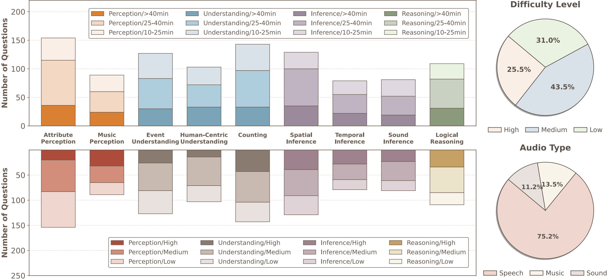
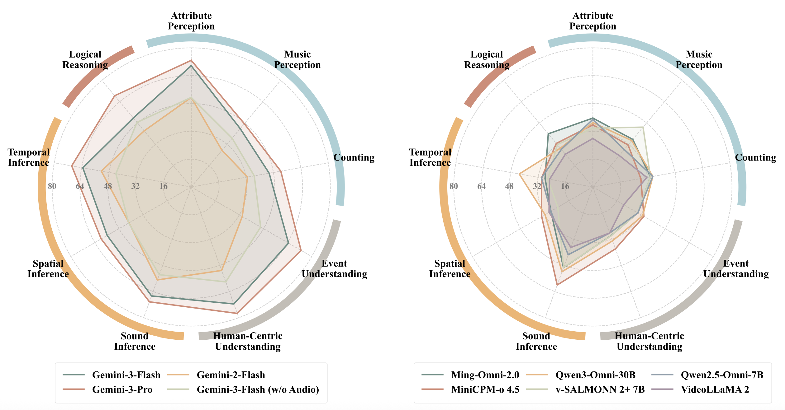

🌟 [2026.03.19] We are very proud to launch LVOmniBench, the pioneering comprehensive evaluation benchmark of OmniLLMs in Long Audio-Video Understanding Evaluation!
Recent advancements in omnimodal large language models (OmniLLMs) have significantly improved the comprehension of audio and video inputs. However, current evaluations primarily focus on short audio and video clips ranging from 10 seconds to 5 minutes, failing to reflect the demands of real-world applications, where videos typically run for tens of minutes.
To address this critical gap, we introduce LVOmniBench, a new benchmark designed specifically for the cross-modal comprehension of long-form audio and video. We curated a diverse collection of long videos, with durations ranging from 10 to 90 minutes and an average duration of 2,069s. This dataset comprises 275 high-quality videos and 1,014 manually constructed QA pairs explicitly designed to require joint reasoning across both audio and visual modalities.

| # | Model | Modality | Low | Medium | High | Understanding | Perception | Inference | Logical | Avg. |
|---|---|---|---|---|---|---|---|---|---|---|
| 1 | Gemini-3.0-Pro | A + V | 79.3 | 68.1 | 45.0 | 73.3 | 60.1 | 65.4 | 67.5 | 65.8 |
| 2 | Gemini-3.0-Flash | A + V | 76.6 | 63.0 | 31.0 | 67.7 | 54.7 | 60.6 | 51.8 | 59.0 |
| 3 | Gemini-3.0-Flash | V | 55.6 | 49.3 | 30.6 | 51.4 | 42.9 | 42.3 | 48.5 | 46.2 |
| 4 | Gemini-2.0-Flash | A + V | 57.0 | 48.9 | 29.8 | 41.4 | 38.5 | 49.1 | 42.1 | 42.9 |
| 5 | Qwen3-VL-30B | V | 42.9 | 35.2 | 30.1 | 37.4 | 39.9 | 32.5 | 30.9 | 36.3 |
| 6 | Qwen3-Omni-30B | A + V | 41.0 | 36.3 | 28.6 | 33.0 | 35.8 | 40.5 | 29.1 | 35.8 |
| 7 | Qwen3-VL-8B | V | 37.1 | 36.5 | 32.1 | 32.2 | 37.1 | 36.7 | 34.6 | 35.6 |
| 8 | MiniCPM-o 4.5 | A + V | 43.4 | 34.1 | 25.1 | 35.7 | 31.9 | 39.1 | 32.7 | 34.8 |
| 9 | Ming-Omni-2.0-100B | A + V | 41.3 | 32.9 | 29.3 | 30.0 | 36.5 | 33.9 | 39.1 | 34.6 |
| 10 | video-SALMONN 2+ 7B | A + V | 40.9 | 30.2 | 26.7 | 30.0 | 36.3 | 30.3 | 31.8 | 32.7 |
| 11 | Qwen2.5-Omni-7B | A + V | 37.7 | 29.9 | 28.3 | 29.1 | 34.9 | 31.8 | 28.2 | 32.0 |
| 12 | VideoLLaMA2-7B | A + V | 27.0 | 26.8 | 28.2 | 23.9 | 28.2 | 29.4 | 24.6 | 27.2 |
| 13 | Qwen2-Audio | A | 27.0 | 25.2 | 21.2 | 25.2 | 22.0 | 26.3 | 29.1 | 24.7 |

Distribution of videos in LVOmniBench spanning diverse fine-grained subcategories and durations.

Distribution of question types, difficulty levels, and audio types.

@article{tao2026lvomnibench,
title={LVOmniBench: Pioneering Long Audio-Video Understanding Evaluation for Omnimodal LLMs},
author={Keda Tao and Yuhua Zheng and Jia Xu and Wenjie Du and Kele Shao and Hesong Wang and Xueyi Chen and Xin Jin and Junhan Zhu and Bohan Yu and Weiqiang Wang and Jian Liu and Can Qin and Yulun Zhang and Ming-Hsuan Yang and Huan Wang},
journal={arXiv preprint arXiv:2603.19217},
year={2026}
}